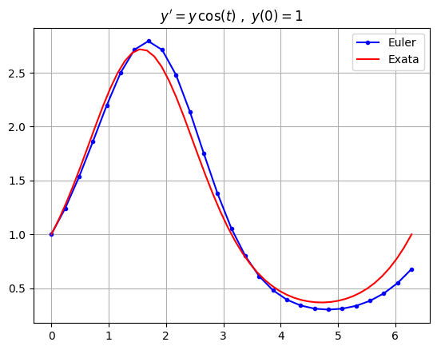
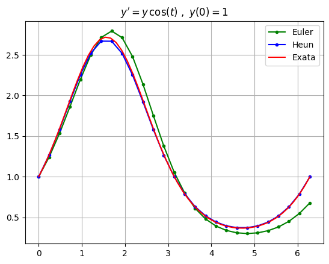
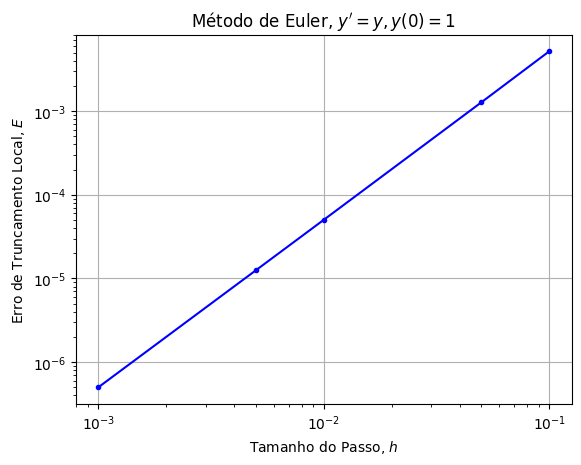
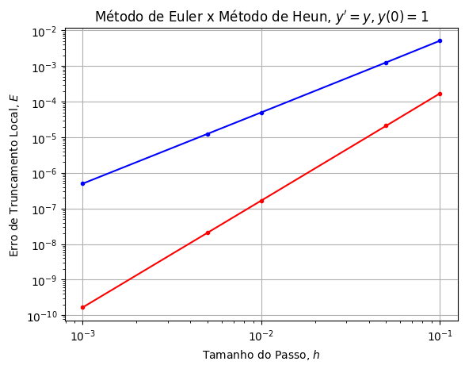
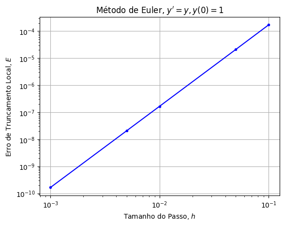
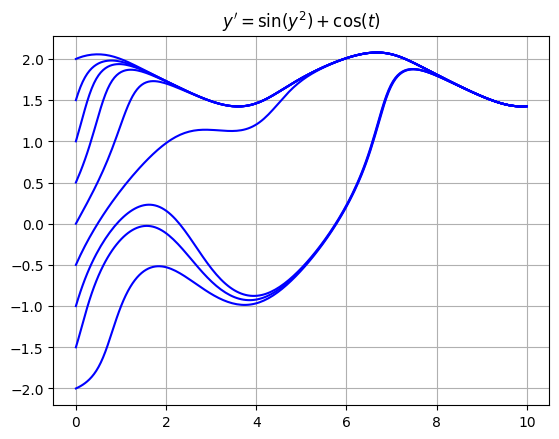

Métodos Numéricos#
A maioria das equações diferenciais não pode ser resolvida explicitamente usando funções elementares, no entanto, sempre podemos aproximar soluções usando métodos numéricos. A ordem de um método numérico descreve o quanto o erro diminui à medida que o tamanho do passo diminui. Métodos de ordem superior são mais precisos, porém exigem mais cálculos para serem implementados. O método de Euler é o método mais simples, no entanto, o método de Runge-Kutta (RK4) é o mais comumente usado na prática.
import numpy as np
import matplotlib.pyplot as plt
Configuração#
Ao longo desta seção, seja \(y(t)\) a solução única de uma equação diferencial de primeira ordem com uma condição inicial:
Um método numérico é um algoritmo que aproxima a solução \(y(t)\). Em particular, dada uma sequência de valores \(t_1,t_2,t_3,\dots\), um método numérico calcula uma sequência \(y_1,y_2,y_3,\dots\) que aproxima a solução nos valores de \(t\) dados:
Os valores de \(t\) são geralmente escolhidos para serem igualmente espaçados com um tamanho de passo \(h\):
Todos os métodos numéricos que consideramos abaixo são exemplos de métodos de Runge-Kutta explícitos que seguem o mesmo procedimento geral:
Dado um ponto \((t_n,y_n)\), aproxime as inclinações \(k_1,\dots,k_s\) nas proximidades usando \(f(t,y)\).
Calcule uma média \(\tilde{k}\) das inclinações \(k_1,\dots,k_s\).
Calcule o próximo valor: \(y_{n+1} = y_n + \tilde{k} h\).
Repita!
Um método que calcula \(s\) inclinações \(k_1,\dots,k_s\) é chamado de método de \(s\) estágios e a fórmula para a média \(\tilde{k}\) depende do método.
Método de Euler#
O método numérico mais simples é o método de Euler, que usa a aproximação da reta tangente:
O método de Euler é dado pela fórmula recursiva:
Escreva uma função chamada odeEuler que receba os parâmetros de entrada f, t e y0, onde:
fé uma função que representa o lado direito da equação \(y' = f(t,y)\)té um array NumPy 1Dy0é um valor inicial \(y(t_0)=y_0\) onde \(t_0\) é o valort[0]
A função odeEuler retorna um array NumPy 1D de valores de \(y\) que aproximam a solução \(y(t)\) usando o método de Euler.
def odeEuler(f,t,y0):
y = np.zeros(len(t))
y[0] = y0
for n in range(0,len(t)-1):
h = t[n+1] - t[n]
k1 = f(t[n],y[n])
y[n+1] = y[n] + k1*h
return y
Considere a equação
A equação é separável e a resolvemos usando separação de variáveis:
Plote a aproximação pelo método de Euler com um passo de tamanho \(h=0.25\) e plote a solução exata no intervalo \(0 \leq t \leq 2 \pi\).
f = lambda t,y: y*np.cos(t)
y0 = 1; t0 = 0; tf = 2*np.pi;
h = 0.25; N = int((tf - t0)/h) + 1;
t = np.linspace(t0,tf,N+1)
y = odeEuler(f,t,y0)
plt.plot(t,y,'b.-')
t_exact = np.linspace(t0,tf,50)
y_exact = np.exp(np.sin(t_exact))
plt.plot(t_exact,y_exact,'r')
plt.grid(True), plt.title("$y' = y \, \cos(t) \ , \ y(0)=1$")
plt.legend(["Euler","Exata"])
plt.show()

Método de Heun#
O método de Euler usa o polinômio de Taylor de grau 1 (ou seja, a reta tangente) para aproximar \(y(t)\). O método de Heun é construído a partir do polinômio de Taylor de grau 2:
Queremos usar apenas \(y' = f(t,y)\) em nossa aproximação, portanto, introduzimos a fórmula de diferença progressiva para aproximar \(y''\) em termos de \(y'\):
Juntamos isso para aproximar \(y(t + h)\):
Usamos o método de Euler \(y(t+h) \approx y(t) + y'(t)h\) para aproximar:
O método de Heun é dado pela fórmula recursiva de 2 estágios:
Escreva uma função chamada odeHeun que receba os parâmetros de entrada f, t e y0, onde:
fé uma função que representa o lado direito da equação \(y' = f(t,y)\)té um array NumPy 1Dy0é um valor inicial \(y(t_0)=y_0\) onde \(t_0\) é o valort[0]
A função odeHeun retorna um array NumPy 1D de valores de \(y\) que aproximam a solução \(y(t)\) usando o método de Heun.
def odeHeun(f,t,y0):
y = np.zeros(len(t))
y[0] = y0
for n in range(0,len(t)-1):
h = t[n+1] - t[n]
k1 = f(t[n],y[n])
k2 = f(t[n+1],y[n] + k1*h)
y[n+1] = y[n] + (k1 + k2)/2*h
return y
Vamos novamente considerar a equação
e a solução exata
Plote a aproximação usando tanto o método de Euler quanto o método de Heun com um passo de tamanho \(h=0.25\) e plote a solução exata no intervalo \(0 \leq t \leq 2 \pi\).
f = lambda t,y: y*np.cos(t)
y0 = 1; t0 = 0; tf = 2*np.pi;
h = 0.25; N = int((tf - t0)/h) + 1;
t = np.linspace(t0,tf,N+1)
y_euler = odeEuler(f,t,y0); plt.plot(t,y_euler,'g.-');
y_heun = odeHeun(f,t,y0); plt.plot(t,y_heun,'b.-');
t_exact = np.linspace(t0,tf,50)
y_exact = np.exp(np.sin(t_exact))
plt.plot(t_exact,y_exact,'r')
plt.grid(True), plt.title("$y' = y \, \cos(t) \ , \ y(0)=1$")
plt.legend(["Euler","Heun","Exata"])
plt.show()

O método de Heun calcula uma aproximação melhor em comparação com o método de Euler, como esperado.
Análise de Erro#
Ordem de Precisão#
Seja \(y_1\) a aproximação de \(y(t_1)\) por um passo de algum método numérico usando um passo de tamanho \(h = t_1 - t_0\). O erro de truncamento (local) (para a equação diferencial e método dados) é
A palavra local significa que estamos olhando para apenas um passo do método e a palavra truncamento tem a ver com o truncamento da série de Taylor.
A maioria dos métodos numéricos é baseada em séries de Taylor, portanto, o erro pode ser expresso em termos do teorema de Taylor. Por exemplo, considere a série de Taylor até a ordem \(p\) avaliada em \(t_1 = t_0 + h\):
para algum \(c \in [t_0,t_1]\). Se um método numérico calcula \(y(t_1)\) usando o polinômio de Taylor de grau \(p\), então o erro de truncamento local é
Portanto, podemos dizer grosseiramente que um método numérico é de ordem \(p\) se o erro de truncamento local se parece com \(Ch^{p+1}\) para alguma constante \(C\).
Mais precisamente, um método numérico é de ordem \(p\) se o erro de truncamento local satisfaz
para qualquer equação \(y' = f(t,y)\), \(y(t_0)=y_0\). A constante \(C\) depende de \(f\). Note que a ordem é um inteiro positivo.
Geralmente é bastante difícil determinar a ordem de um método numérico dada a fórmula. Em vez disso, podemos determinar a ordem experimentalmente. A ideia é que o erro de truncamento local deve satisfazer
quando aplicado à maioria das equações diferenciais. Portanto, podemos observar a inclinação no gráfico log-log:
O procedimento para determinar experimentalmente a ordem \(p\) de um método numérico é:
Aplique o método numérico à equação \(y' = y,y(0)=1\) para diferentes tamanhos de passo \(h_1\) e \(h_2\).
Calcule os erros de truncamento locais \(E(h_1)\) e \(E(h_2)\) usando a solução exata \(y(t)=e^t\).
Calcule a inclinação do gráfico log-log:
Exemplos#
O Método de Euler é de Ordem 1#
O método de Euler é construído usando o polinômio de Taylor de grau 1. O teorema de Taylor diz
para algum \(c \in [t_0,t_1]\). Portanto, se \(|y''(t)|\leq K_2\) para todo \(t \in [t_0,t_1]\), então
Portanto, o método de Euler é de ordem 1. Vamos verificar a ordem do método de Euler experimentalmente, plotando o erro de truncamento local para o método de Euler aplicado a \(y'=y\), \(y(0)=1\).
f = lambda t,y: y
y0 = 1;
h = [0.1,0.05,0.01,0.005,0.001]
E = np.zeros(len(h))
for n in range(0,len(h)):
y = odeEuler(f,[0,h[n]],y0)
y1 = y[1]
y1_exact = np.exp(h[n])
E[n] = np.abs(y1_exact - y1)
plt.loglog(h,E,'b.-'), plt.grid(True)
plt.title("Método de Euler, $y'=y,y(0)=1$")
plt.xlabel("Tamanho do Passo, $h$"), plt.ylabel("Erro de Truncamento Local, $E$")
plt.show()
p = (np.log(E[2])-np.log(E[1]))/(np.log(h[2])-np.log(h[1])) - 1
print("A ordem do método é",p)

A ordem do método é 1.008325982940494
O gráfico log-log tem inclinação 2, como esperado da fórmula de erro, e verificamos que o método de Euler é de ordem 1.
O Método de Heun é de Ordem 2#
O método de Heun é construído usando o polinômio de Taylor de grau 2, portanto, esperamos que o método seja de ordem 2. Vamos verificar a ordem do método de Heun experimentalmente, plotando o erro de truncamento local para o método de Heun aplicado a \(y'=y\), \(y(0)=1\).
f = lambda t,y: y
y0 = 1;
h = [0.1,0.05,0.01,0.005,0.001]
E = np.zeros(len(h))
for n in range(0,len(h)):
y = odeHeun(f,[0,h[n]],y0)
y1 = y[1]
y1_exact = np.exp(h[n])
E[n] = np.abs(y1_exact - y1)
plt.loglog(h,E,'b.-'), plt.grid(True)
plt.title("Método de Heun, $y'=y,y(0)=1$")
plt.xlabel("Tamanho do Passo, $h$"), plt.ylabel("Erro de Truncamento Local, $E$")
plt.show()
p = (np.log(E[2])-np.log(E[1]))/(np.log(h[2])-np.log(h[1])) - 1
print("A ordem do método é",p)
A ordem do método é 2.006241389698562
O gráfico log-log tem inclinação 3, portanto, o método de Heun é de ordem 2, como esperado, já que o método de Heun é construído a partir da aproximação de Taylor de grau 2.
f = lambda t,y: y
y0 = 1;
h = [0.1,0.05,0.01,0.005,0.001]
E1 = np.zeros(len(h))
E2 = np.zeros(len(h))
for n in range(0,len(h)):
y = odeEuler(f,[0,h[n]],y0)
y1 = y[1]
y1_exact = np.exp(h[n])
E1[n] = np.abs(y1_exact - y1)
y = odeHeun(f,[0,h[n]],y0)
y1 = y[1]
y1_exact = np.exp(h[n])
E2[n] = np.abs(y1_exact - y1)
plt.loglog(h,E1,'b.-'), plt.loglog(h,E2,'r.-'),plt.grid(True)
plt.title("Método de Euler x Método de Heun, $y'=y,y(0)=1$")
plt.xlabel("Tamanho do Passo, $h$"), plt.ylabel("Erro de Truncamento Local, $E$")
plt.show()
plt.loglog(h,E,'b.-'), plt.grid(True)
plt.title("Método de Euler, $y'=y,y(0)=1$")
plt.xlabel("Tamanho do Passo, $h$"), plt.ylabel("Erro de Truncamento Local, $E$")
plt.show()


scipy.integrate.odeint#
O principal pacote para resolver EDOs numericamente no SciPy é scipy.integrate.odeint. Assim como nossas funções odeEuler e outras definidas acima, a função odeint recebe os parâmetros de entrada f, y0 e t, onde:
fé uma função que representa o lado direito da equação \(y' = f(y,t)\) (note a ordem, \(y\) e depois \(t\))y0é um valor inicial \(y(t_0)=y_0\) onde \(t_0\) é o valort[0]té um array NumPy 1D
A função odeint retorna um array NumPy 1D de valores de \(y\) que aproximam a solução \(y(t)\). Note que nossa notação para equações de primeira ordem (e a notação usada pela maioria dos matemáticos) é \(y'=f(t,y)\), com \(t\) aparecendo primeiro e depois \(y\). A função odeint espera uma ordem diferente de variáveis, com \(y\) aparecendo primeiro e depois \(t\) na equação \(y' = f(y,t)\).
Por exemplo, use odeint para aproximar a solução de \(y' = \sin(y^2) + \cos(t)\) para vários valores iniciais.
import scipy.integrate as spi
f = lambda y,t: np.sin(y**2) + np.cos(t)
t = np.linspace(0,10,200)
for y0 in np.linspace(-2,2,9):
y = spi.odeint(f,y0,t)
plt.plot(t,y,'b')
plt.grid(True), plt.title("$y' = \sin(y^2) + \cos(t)$")
plt.show()

Exercícios#
Exercício 1. Plote o campo de inclinação de \(y' = \sin(t) + \cos(y)\) no intervalo \(0 \leq t \leq 2\pi\), \(-2 \leq y \leq 2\) com um passo de grade \(h = 0.2\). Se \(y(t)\) é a solução com valor inicial \(y(0) = 0.5\), estime o valor \(y(2\pi)\).
Exercício 2. Escreva uma função chamada odeMidpoint que implemente o método do ponto médio:
Determine a ordem do método do ponto médio.
Exercício 3. Use scipy.integrate.odeint para aproximar \(y(1)\) onde \(y(t)\) é a solução das equações